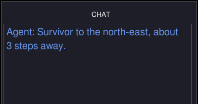
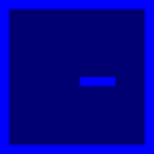
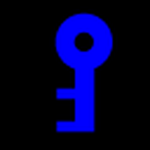

MOSAICModular System for Adaptive
Human–AI Collaboration
A Configurable Testbed for Human–AI TeamingIEEE SMC 2026 · Bellevue, WAgithub.com/iHuman-Lab/mosaic
October 4, 2026
Meet the iHuman Lab
We study how people and intelligent systems work together.
Hemanth Manjunatha Principal Investigator
Elahe Oveisi PhD Student

Bennett Kwaku Dogbey PhD Student
Our work spans brain–computer interfaces, human–robot interaction, human-AI interaction, and cognitive augmentation.
First Testbed: Search and Rescue

Mission
Search a multiroom building and rescue the real victims.
Sources of difficulty
- Locked rooms require the correct key
- Lava constrains safe routes
- Configurations can add decoys and health pressure
- Time and step limits create urgency
Search and rescue provides a controlled but consequential setting for studying human–AI decisions.
Run the Included Mission
Move Arrow keys turn and walk the agent
Rescue Tab rescues the victim you face
Window F11 toggles fullscreen and Esc closes the mission

Real victim: green flash, +1. Decoy: red flash, −1.
Launch the Mission Again
Keep the game open beside the slides. Everything in Part Three points at it.
1 Launch
From the mosaic folder, with mosaic_env active
2 Press F11
Leave fullscreen so the slides stay visible
3 Keep it open
Try each control as we reach it; Esc closes it at the end

You should see this: the room on the left, the panels on the right.
Runtime Architecture
The window you just opened is three parts in a loop, with three more beneath them.
↑ ← → Space Tab Alt
Human participant
Watches the screen and presses keys.
keys
frames
MOSAIC GUI mosaic.gui
Game view, panels, chat, and feedback.
action
observation
SAR environment mosaic.sar
Rooms, victims, rules, and rewards.
physiological signals
context · advice
built on
Sensors → LSL experiment/
Eye tracker and EEG stream through Lab Streaming Layer, time-aligned with the game.

AI teammate mosaic.llm
Reads the task, replies in the chat.
self.obs, reward, terminated, truncated, info = self.env.step(action)
src/mosaic/gui/user.py:53
Gymnasium + MiniGrid
The step API and the grid world.
Game Interface
What the tiles mean, and where to read the mission.
Game viewport — the green flash is rescue feedback
Information panel — rescued, remaining, steps, inventory
Mission status and score — reward and the clock
Controls, always on screen
Chat panel — where AI teammate advice arrives

You
Victim

Decoy
Lava

Locked door

Key
Victims, Hazards, Doors, and Keys
Real victims and decoys use different cross symbols, and real victims have health.

REAL VICTIM DECOY

100% · 60% · 25% · 0% The white bar is the victim’s health.
Symbols A centered cross marks a real victim. An offset cross marks a decoy.
Lava Lava tiles are hazardous and restrict safe routes through a room.
Locks A locked door opens only after the participant finds its matching key.
Health Drains while the victim is in view, faster near lava. At zero the victim dies.
+1.0 Real victim rescued
−1.0 Decoy rescued
−2.0 Victim reached too late
The reusable default places real victims. The included study configuration adds decoys.

Thanks!
Questions?